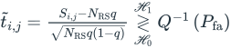
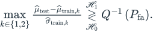
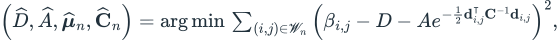

整体概括
从波束功率找可供定位的反射路径
论文把固定基站与移动用户设备之间的双站毫米波通感一体化链路当作信号源：先在发射角与到达角组成的角度格网上检测候选路径，再估计角度和时延，交给快照式同步定位与建图（SLAM）后端。改变的是探测前端，不是轨迹滤波器；一帧波束扫描独立产出一个位置。
对照原文证据
A radio- SLAM processing chain generally consists of two stages. First, received measurements are converted into path estimates of angle of arrival (AoA) , angle of departure (AoD) , and time of arrival (ToA) . These estimates are then processed by a SLAM algorithm to recover the UE state and landmark positions.At each trajectory point, one complete TX - RX beam sweep forms a snapshot. Each detector extracts a set of path measurements from that snapshot, comprising angles, delay and power. The regularised robust snapshot- SLAM estimator of [ 9 ] processes these paths independently for each snapshot and returns one UE position and a set of landmark positions. The detectors are compared over the positioning RMSE in the azimuthal plane.收益来自一种室内实测条件
在 60 GHz 室内实测中，非相干积分先把资源单元的功率平均，再以适配积分后噪声分布的恒虚警率检测（CFAR）找峰。与奇异值分解（SVD）基线相比，作者报告较低的定位均方根误差（RMSE），差别主要体现在非视距（NLOS）快照，不是室外定位结果。
对照原文证据
The proposed methods are evaluated on experimental 60 GHz indoor measurements using a snapshot- SLAM estimator. Compared with a singular value decomposition (SVD) -based detector, the proposed CFAR approaches reduce the overall positioning RMSE from 0.30 m to 0.24-0.26 m, with the largest improvement in non-line-of-sight snapshots.Research gap
不知道完整天线响应，也需要弱径
一些信道估计方法依赖导向矢量、波束权重或天线方向图，但实验问题预设只有波束编号和标称指向可用。秩一 SVD 抑制噪声及旁瓣的同时主要保留强分量；对于失去直达径的几何解算，弱反射可能反而提供有用约束。这个矛盾是作者的动机，不是全领域查新。
对照原文证据
They often require knowledge of the steering vectors, beamforming weights, or antenna beampatterns. In practical beam-sweeping systems, however, only the beam indices and their nominal pointing directions may be available, limiting the applicable channel parameter estimation methods.The rank-1 singular value decomposition (SVD) -based approach provides robustness against sidelobes and noise. However, the low-rank extraction mainly retains only dominant components, whereas multipath-radio SLAM benefits from retaining weaker geometrically informative returns.省掉重复检测，不能沿用旧阈值
逐资源单元（RE）对平方律功率做单元平均 CFAR 有指数噪声模型可用，却需要重复扫完整角度平面。先对多个 RE 的功率做非相干积分，虽只须扫描一次，单元功率已不再服从单视指数分布。本文的对策是在积分后的功率图上重新构造统计量。
对照原文证据
As a more efficient alternative, we integrate the power over the REs first and threshold once. The non-coherent power map \beta of ( 6 ) averages square-law samples of each beam pair, so detection reduces to a single CFAR scan of the AoA / AoD plane. Integrating the power changes the noise law. By ( 7 ) and ( 8 ) the cells of \beta are approximately Gaussian, so the threshold in ( 10 ) does not achieve the nominal false-alarm rate. This motivates the modified Gaussian Q -function test derived next.算法主线
原图由本站加载；若未显示，可打开下方原图链接。
跟着原图读
- 先看中心与保护带
两幅图横轴为到达角 AoA、纵轴为发射角 AoD，单位均为波束格而非度。中心红格是测试区，紧邻的橙斜线格是保护带，不参加背景统计。
- 再看右侧的两条参考带
左图用周边方环，右图分别对横向和纵向取样，避开外圈四角。用两条参照各算反差，可以减少一个方向的强旁瓣把整片噪声估计抬高的可能。
- 留意图例和文字的编号
图例把蓝色 train,1 画成水平条，绿色 train,2 为垂直条；原图注对两个编号写作相反的轴向。按方向理解，两个参考量均参与最大值运算。
原图展示几何设计，不给搜索步长、最优参数或实测虚警率；不能用格子数量反推全部实验配置。
许可：CC BY-NC-ND 4.0；本站仅作非商业转载。完整原图区域按 PDF 原样栅格化为 PNG，保留图内坐标、图例及颜色；未重绘、重标或加注。
两条检测分支：逐片投票与一次阈值
输入是对已知定位参考信号（PRS）匹配滤波得到的复数 I/Q 数据，索引为发射波束、接收波束及承载 PRS 的 RE。逐 RE 分支先在每片做平方律检测，再把二元结果计票；非相干分支先求平方模并跨 RE 平均，随后在角度图上做一次局部阈值检测。
对照原文证据
After OFDM demodulation, the REs carrying the PRS are matched-filtered against the known transmitted sequence, obtaining the complex beamformed sample y_{k,m}^{i,j} , whose noise-only distribution is used to derive the decision threshold and the detection statistic of the CFAR detectors of Sec. III-B .Classical CFAR can be applied directly on each frequency–time slice of the datacube: for each beam pair (i,j) and each (k,m)\in\mathcal{M}_{\text{RS}} , demodulation yields one square-law sample at a fixed AoA / AoD cell. As per ( 5 ), this single-look statistic is exponentially distributed.A single RE carries only a fraction of the signal’s energy, so the per-slice decisions are not used individually but accumulated over the datacube. Applying ( 10 ) to each RE of a beam pair (i,j) yields the binary decisionAs a more efficient alternative, we integrate the power over the REs first and threshold once. The non-coherent power map \beta of ( 6 ) averages square-law samples of each beam pair, so detection reduces to a single CFAR scan of the AoA / AoD plane.先判断区块，过阈值后只留块内峰
待测区 CUT 由邻近角度格点组成，滑动步幅决定实际检测次数。十字形参考窗在横纵两条带上各估局部均值与标准差，比较两条标准化反差中的较大值。区块通过后把检测回写到最强格点；随后以单链接按索引距离合并邻近告警，每簇再留最强格点。
对照原文证据
We group N_{\mathrm{test}}\times N_{\mathrm{test}} cells into one test block and slide it across the angular map. The local statistic and threshold are evaluated once per block rather than at every bin, reducing the number of operations by a factor set by the block stride, up to the block area N_{\mathrm{test}}^{2} for non-overlapping placement.When a block passes the detection test, the detection is assigned to the strongest pixel within the group, so the original per-bin resolution of the map is retained.Each strip yields its own moments \hat{\mu}_{\mathrm{train},k} and \hat{\sigma}_{\mathrm{train},k} , k\in\{1,2\} , from ( 14 ), and the test statistic ( 15 ) is taken by comparing the cut against the training strip with less power, i.e., comparing the threshold using the maximum of the two normalized contrastsDetections in \mathcal{D} are clustered by single linkage: two cells (i,j) and (i^{\prime},j^{\prime}) are merged when their index distance satisfies \lVert(i,j)-(i^{\prime},j^{\prime})\rVert_{2}\leq N_{\mathrm{test}}/\sqrt{2} , so that a chain of adjacent alarms along a lobe forms one group.角度图不能替代测时所需的相位
对保留的峰，用带常数底座的二维高斯拟合并在相邻波束方向间插值获得亚格点方位角；粗时延取匹配参考波形的互相关峰，细时延从补偿粗延迟后的子载波相位做相干搜索。之后删除与更强峰在角度和时延上都很近的弱候选，再把路径集送入后端。
对照原文证据
where \mathbf{d}_{i,j}=[i\;\,j]^{\intercal}-\bm{\mu} is the offset of cell (i,j) from the lobe centre \bm{\mu} , expressed in fractional cell indices, and \mathbf{C} is the covariance matrix that sets width and orientation of the lobe. Parameters are estimated jointly by nonlinear least squares. The pedestal D accounts for the local noise floor, and A is the amplitude of the Gaussian lobe. The fitted mean \hat{\bm{\mu}}_{n} is a fractional cell index: the refined angles \hat{\psi}_{\mathrm{TX},n} and \hat{\psi}_{\mathrm{RX},n} are obtained by linear interpolation between adjacent beam values.The coarse delay \tau_{c} is obtained from the time-domain I/Q of the detected beam pair (\hat{\imath}_{n},\hat{\jmath}_{n}) , as the lag that maximises the cross-correlation of the received waveform with a stored PRS replica.It is obtained by a sub-sample grid search that maximises the coherent correlation of the least-squares PRS channel estimate on the detected beam pair after compensating for the coarse delay. Sidelobe filtering then discards weaker returns that are close in angle and delay to a stronger peak.关键公式
功率平均如何改变零假设
单个无信号格点的同相与正交分量在模型中独立、等方差；平方模呈指数分布。许多独立同分布指数样本求和是 Erlang，样本多时近似高斯；功率图是平均而不是和，因此均值保持为局部噪声功率，方差相对于单样本缩小。先识别统计量，再选阈值分位数。
对照原文证据
When only AWGN is present, the in-phase and quadrature components of y_{k,m}^{i,j} are independent zero-mean Gaussian random variables of equal varianceCells in \beta average N_{\text{RS}} squared magnitudes, so the per-pixel noise law is no longer exponential. The PDF of the sum of V exponentially distributed random variables z=\sum_{i=1}^{V}v_{i} is given by the Erlang distribution with shape V and scale \sigma^{2} [ 12 ] ,For large V , the Erlang distribution approaches a Gaussian distribution with mean V\sigma^{2} and variance V\sigma^{4} ,名义虚警率不是整张图的实测虚警率
作者以训练格点标准差而非独立均值差的标准误归一化，并在两条参考带的统计量中取最大值；块均值、邻格相关以及多重比较都会改变尾部。这里保留原式，实际部署前需要在无路径样本上校准，不能由高斯近似直接断言整个扫描的经验虚警率等于输入值。
对照原文证据
Under \mathcal{H}_{0} cells in both regions sample the noise-only population in ( 8 ), so both estimates are approximately Gaussian and centred on the common mean \sigma_{s}^{2} . Under \mathcal{H}_{1} the test region contains path energy, which increases \hat{\mu}_{\mathrm{test}} with respect to the training mean. Detection is therefore declared on the difference between the test and training means, normalized by the training standard deviation of training cellsEach strip yields its own moments \hat{\mu}_{\mathrm{train},k} and \hat{\sigma}_{\mathrm{train},k} , k\in\{1,2\} , from ( 14 ), and the test statistic ( 15 ) is taken by comparing the cut against the training strip with less power, i.e., comparing the threshold using the maximum of the two normalized contrasts把 I/Q 数据立方体变成平均功率图
对每组收发波束，先将每个 PRS 样本平方取模，再平均。教学例（非原文数据）：三个平方模为 2、5、8 个任意功率单位，平均为 5；把复振幅先相加再平方是另一种积分。
符号与实现提醒
- βᵢⱼ
- 发射波束 i、接收波束 j 的平均功率，保持平方模的功率单位。
- Nᵣₛ、ℳᵣₛ
- 参与积分的资源单元数与其索引集合。
- vᵢⱼₖₘ
- 子载波 k、OFDM 符号 m 的匹配滤波输出平方模。
独立同分布与足够样本数主要用于后续近似，平均操作本身不要求独立；不要把功率均值当成保留相位的复数通道。
逐片投票的二项标准化

检测数相对纯噪声期望高出多少个标准差。教学例：100 片，单片 q=0.2，预期 20 票、标准差 4；观测到 28 票，统计量为 2。与预设的标准高斯上尾分位数比较。
符号与实现提醒
- Sᵢⱼ
- 同一角度格点上累计的投票数。
- q、Pfa
- 逐资源单元的名义虚警率；投票门限的名义虚警率。
- Q⁻¹、H₀/H₁
- 标准高斯上尾分位数；噪声零假设和存在路径的备择假设。
小尾概率、样本少或相邻频时判定相关时，要检查正态近似和实际尾部。
十字窗以较有反差的条带判候选

同一测试块与两条正交参考带各做一次对照。教学例：块均值 9，带均值 5 和 7，带标准差 2 和 1；两条反差都是 2，最大值仍为 2。
符号与实现提醒
- μ̂test
- 测试区功率均值；与条带均值同单位。
- μ̂train,k、σ̂train,k
- 第 k 条参考带均值和标准差，后者应为正。
- Q⁻¹(Pfa)
- 原文采用的无量纲名义比较阈值。
两个分母可不相等，最大标准化反差不总等于选较低均值的条带；零方差保护与双带联合分布需另行检验。
用局部主瓣拟合细化角度

将邻域格点拟合为常数底座加二维高斯峰；输出中心是分数格点。教学例：底座为 2、幅度为 4，则峰中心预测功率为 6；实测若为 7，该格对目标的平方残差为 1。
符号与实现提醒
- D、A
- 常数功率底座与峰高，单位同 β。
- μ、dᵢⱼ
- 主瓣中心及格点相对中心的二维偏移，单位为格。
- C、𝒲ₙ
- 主瓣宽度及方向的协方差矩阵、峰附近用于拟合的格点集合。
该式是假定局部单峰的非线性拟合，不是以真实位置监督训练；C 应可逆，输出分数坐标再按实际波束方向插值。
实验怎么做
同一组波形、同一后端，比前端
作者使用坦佩雷大学 Hervanta 校区开放 60 GHz 室内双站数据：固定基站照射沿既定路线移动的设备，两端机械扫波束，PRS 占用 400 MHz。不同检测器共用原始 I/Q、角度细化、时延估计、旁瓣剔除及鲁棒快照 SLAM；比较平面位置误差，不通过时间序列平滑借前后帧信息。复现应从正文参考文献所引开放数据与快照后端开始。
对照原文证据
Experiments use the open 60 GHz indoor dataset collected at the Hervanta campus, Tampere University [ 8 ] . The dataset consists in a set of bistatic measurements where a fixed BS illuminates a UE which moves along a predefined trajectory while both sides perform a mechanical beam sweep [ 8 ] .At each of the 43 trajectory points (nominal spacing \approx 0.5 m), the BS transmits a 5G NR PRS OFDM waveform with 400 MHz occupied bandwidth. The UE records complex I/Q for every TX - RX beam pair in the sweep.All detectors are compared using the same raw I/Q waveforms and forming the same AoA / AoD / RE datacube. Furthermore, they share the same downstream stages: fixed-window Gaussian refinement, PRS -based delay estimation and sidelobe filtering. At each trajectory point, one complete TX - RX beam sweep forms a snapshot. Each detector extracts a set of path measurements from that snapshot, comprising angles, delay and power. The regularised robust snapshot- SLAM estimator of [ 9 ] processes these paths independently for each snapshot参数扫描后选最低误差
对比 SVD BRSRP、逐 RE 加投票，以及非相干积分的十字窗单格、十字窗多格、方窗多格。作者扫描名义虚警率，有投票时也扫描逐片虚警率，再保留定位 RMSE 最低的工作点。表因此是该场地的最佳工作点比较；读取的来源未说明另留独立地点或另一路线验证阈值。
对照原文证据
The non-coherent CFAR detector is tested in three configurations: using the plus-shaped window with single- CUT , multi- CUT and using a standard square window with the multi- CUT . The per- RE detector uses a single- CUT and the same plus-shaped window. For each compared approach we sweep the detector hyperparameters, i.e. , nominal false-alarm rate P_{\mathrm{fa}} and the per-slice rate q where applicable, and retain the operating point with the lowest RMSE .Comparison of detector approaches: best snapshot- SLAM positioning RMSE (distance), detector-stage statistic evaluations per snapshot N_{\mathrm{eval}} and threshold time T_{\mathrm{thr}} .快照分组的计数待作者澄清
实验设置列出 43 个轨迹点，却又写 32 个视距、13 个非视距；结果段也写 43 帧。HTML 与 PDF 都有这个矛盾。导读不自行改写分组数量，也不以组别误差和有疑问的分组数量倒算总体；应按数据索引复核场景标注。
对照原文证据
At each of the 43 trajectory points (nominal spacing \approx 0.5 m), the BS transmits a 5G NR PRS OFDM waveform with 400 MHz occupied bandwidth. The UE records complex I/Q for every TX - RX beam pair in the sweep. Thirty-two positions are predominantly LOS with respect to the BS and thirteen are NLOS , i.e. , when the UE moves behind columns or corners.The per- RE detector reaches similar accuracy in this evaluation ( 0.243, m against 0.247, m over 43 snapshots).提升与证据
总体和非视距结果各看哪一列
表 I 的同一后端下，SVD 在全部快照的 RMSE 为 0.303 m，逐 RE 投票为 0.243 m，十字窗多格非相干为 0.247 m。NLOS 列分别是 0.378、0.294、0.293 m；十字窗多格略好于逐 RE 的仅是这列，不能把总体与分组的最优方法互换。
对照原文证据
Baseline: SVD BRSRP 0.272 0.378 0.303 — — — Per- RE CFAR + vote gate 0.223 0.294 0.243 5.03\times 10^{7} 67.7 68.1 NC CFAR (4 CUT cells, plus window) 0.229 0.293 0.247 7.75\times 10^{3} 0.0303 1.371阈值评估次数与实际检测耗时是不同口径
逐 RE 的检测阶段约需 5.03×10⁷ 次统计量评估和 68.1 s；十字窗多格非相干为 7.75×10³ 次和 1.371 s，其中阈值扫描 0.0303 s。检测时间包含组图，逐 RE 还含投票，未计入后端；这些数字来自同一套 MATLAB 嵌套循环，不是实时系统的端到端延迟。
对照原文证据
Per- RE CFAR + vote gate 0.223 0.294 0.243 5.03\times 10^{7} 67.7 68.1 NC CFAR (4 CUT cells, plus window) 0.229 0.293 0.247 7.75\times 10^{3} 0.0303 1.371Time T_{\mathrm{det}} accounts for the map formation and the vote gate. All CFAR rows share the same nested-loop MATLAB implementation over each CUT in the AOA/AOD plane.相同区块大小下换参考窗，会改变遮挡表现
四格非相干检测保持采样块不变时，方窗与十字窗的视距 RMSE 分别为 0.230 和 0.229 m，但非视距 RMSE 分别为 0.342 和 0.293 m。作者将差异归因于定向旁瓣影响噪声背景；这组比较支持场地内的工作点差异，不能分离阈值选择与其他角度统计条件。
对照原文证据
NC CFAR (4 CUT cells, plus window) 0.229 0.293 0.247 7.75\times 10^{3} 0.0303 1.371 NC CFAR (single CUT , plus window) 0.228 0.313 0.252 3.18\times 10^{4} 0.1006 1.442 NC CFAR (4 CUT cells, square window) 0.230 0.342 0.263 7.75\times 10^{3} 0.0198 1.349Beam-pattern sidelobes extend in the angular map around a strong return. A square training region does not consider the angular return structure and sideobes may mask weak returns. The plus-shaped window preserves the contrast with the noise reference by selecting the larger of the two per-strip statistics in ( 16 ), i.e., by comparing the CUT against the strip with less power.原图由本站加载；若未显示，可打开下方原图链接。
跟着原图读
- 先对照图例和横轴方向
蓝圆是多格非相干，橙三角为逐资源单元，红方块为单格非相干；横向向右走是降低名义虚警概率、提高门限，纵轴是定位 RMSE（米）。
- 沿虚线对照同色实线
多格非相干的蓝虚线先下降、随后近似平坦，再在门限继续收紧时跳升；蓝实线起伏小得多。橙色和红色虚线可见范围更窄，不能把不同线型混为整体平均。
图注说明超出纵轴范围的点不显示；图上概率是设置值而非无信号测得的误检频率。曲线不能证明同一阈值在其他场地仍最优。
许可：CC BY-NC-ND 4.0；本站仅作非商业转载。完整原图区域按 PDF 原样栅格化为 PNG，保留图内坐标、图例及颜色；未重绘、重标或加注。
局限与追问
作者明示的统计前提与实验范围
逐资源单元投票的二项模型假定每次判定独立，而作者指出邻近资源单元会观察到同一信道实现。实验只覆盖一个开放室内数据集的二维方位面；未把不同场地、不同阵列图谱、跨快照地图的误差或长期稳定性纳入这里的定位证据。
对照原文证据
The two rates have to be chosen jointly, and the binomial model behind ( 13 ) assumes decisions that are independent across REs , whereas neighboring ones observe the same channel realization.Experiments use the open 60 GHz indoor dataset collected at the Hervanta campus, Tampere University [ 8 ] . The dataset consists in a set of bistatic measurements where a fixed BS illuminates a UE which moves along a predefined trajectory while both sides perform a mechanical beam sweep [ 8 ] .At each trajectory point, one complete TX - RX beam sweep forms a snapshot. Each detector extracts a set of path measurements from that snapshot, comprising angles, delay and power. The regularised robust snapshot- SLAM estimator of [ 9 ] processes these paths independently for each snapshot and returns one UE position and a set of landmark positions. The detectors are compared over the positioning RMSE in the azimuthal plane.阈值下的误检、漏检与后端失败应分开
建议独立估计空窗误检、弱反射漏检、簇合并导致的漏径和后端不可解比例；从曲线中缺失的点不能推断该工况误差为零。对图中训练条带的颜色、轴向及编号也应核对实现：图例编号和图注轴向的对应不同，但对两条统计量取最大值不依赖编号次序。
对照原文证据
Fig. 4 : Snapshot positioning RMSE against the operating P_{\mathrm{fa}} for the non-coherent detector, the per- RE detector and the single- CUT non-coherent detector, separated into LOS (solid) and NLOS (dashed) snapshots. RMSE values exceeding axes bounds are not shown.Right: plus-shaped window with an N_{\mathrm{test}}=2 CUT block and orthogonal training strips \mathcal{A}_{\mathrm{train},1} ( AoD -aligned) and \mathcal{A}_{\mathrm{train},2} ( AoA -aligned) providing separate noise references.连接你的研究
用独立场地检验结构化参考窗
待验证：在定向扫描的室内毫米波里程计上，按房间和日期隔离开发集与留出集。固定波束图、角度精修、后端与候选预算，只替换方窗和十字窗，再加入逐 RE 投票、SVD 作为对照。交付空段实测虚警率、按遮挡分组的误差分布、失败率和逐阶段延迟；以整趟路线重采样报告区间。
先校准尾部，再考察能否迁移
待验证：在可控遮挡和双反射靶场，逐档改变积分长度与角度间隔；用已知反射位置标记候选，比较相同实测虚警率下的弱径召回及定位成功率。如果换房间后十字窗不胜方窗，或高相关及双峰同块导致召回下降，就应否定可直接跨场地复用阈值的假设。
来源与边界
CC BY-NC-ND 4.0；仅为非商业研究导读转载完整 Fig. 2 与 Fig. 4，按官方 PDF 图框原样栅格化，未重绘、改色、删减图内内容或加注。图注独立列录；不上传 PDF 或全文。
对照原始英文摘要
收录历史：2026-11-17
原文许可：CC BY-NC-ND 4.0；本站仅作非商业转载。arXiv 固定版本许可记录 ↗